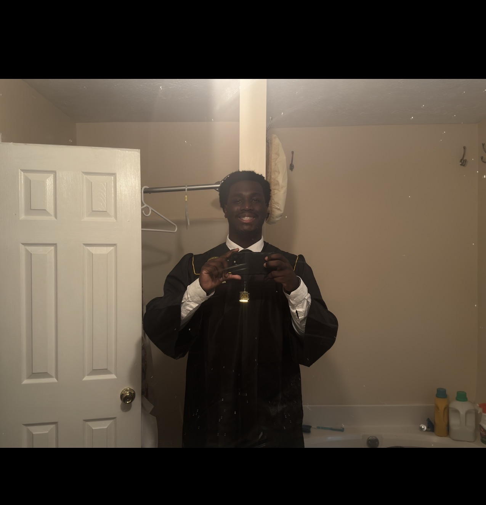

1 of 1
04/17/2026
Tochukwu Okwudire (Recent CS Gradaute)
First off, welcome to my personal portfolio website. I like minimalistic things , so I tried to mimic my website in a home page that I like seeing (the Supreme Homepage). It made this to help display my web dev skills and add my personal touch to it. Now to actually introduce myself:
My name is Tochukwu Okwudire. I am a recent graduate from Kennesaw State University with a Bachelors in Computer Science with a concentration in cybersecurity. I was also a member of KSUNSBE (National Society for Black Engineers) and ASAKSU (African Student Association). My interest mainly lie in software development, IT , and cybersecurity, but I am open to any opportunity. I am interested in entry-level roles dealing with software development or any areas similar.
As you explore my website , you will see the variety of skills that I have gained from my colege carrer at KSU and various projects I dealt with, the projects that I worked on/ made throughtout my journey to get my degree and different forms of communication for myself. Thanks!
← back